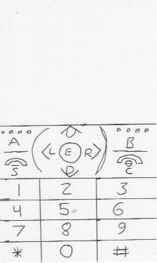
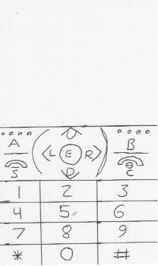

Screens Used
The interface used was a mock version of the itel it5020:
These were the screens shown to the subjects:

The tasks were given with little to no further instructions. If the subject became to confused on how to complete the task, assistance was provided.
The interface used was a mock version of the itel it5020:
These were the screens shown to the subjects:
All tasks were completed relatively quickly, with the exception of Task 6. This was due to an iconographical problem in which subjects did not associate a caret ">" with the use of an arrow in the menu selection area. The icons were changed to the current version.
The subject liked the use of space, and had no gripes with the prototype.
The speed of task completetion was quite low, and confusion of the subject was high. This was due to the subject's lack of knowledge of feature phones.
The subject liked the overall app. Something the subject did not like was the system buttons; specifically the "send" and "end" buttons. The subject did not understand their purpose and said they got in the way. Nothing can be done to fix this, as it is a hardware issue.
All tasks were completed relatively quickly, with the exception of Task 6. This was due to an iconographical problem. The subject did not understand that there were more menus, or what the arrow represented. The subject stated that this could be because of no prior familiarity with WhatsApp.
The subject liked the app in general, saying that it was a good design for the platform. The subject said any problems he had with the prototype were simply due to his lack of knowledge of WhatsApp or feature phones in general.